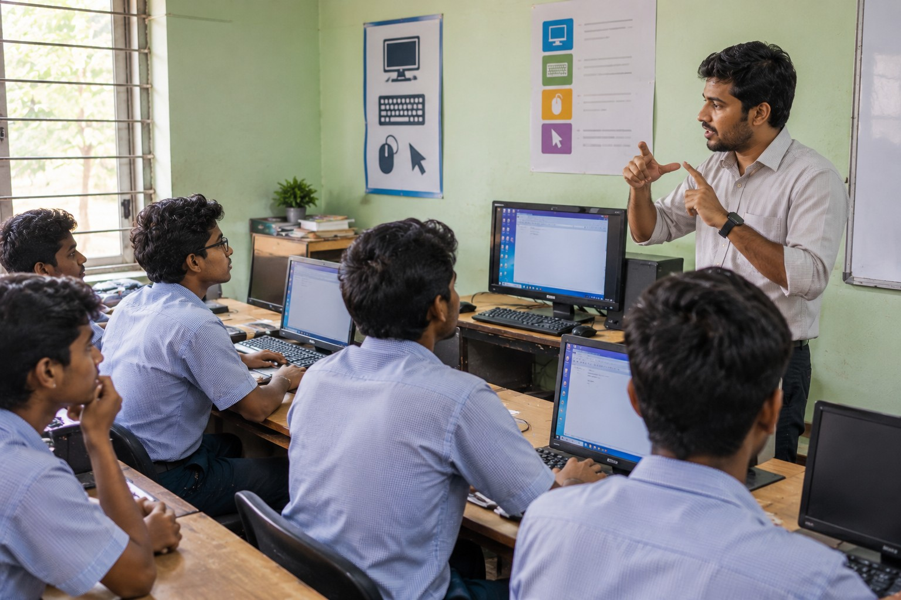

Youth4Jobs runs community training centers for young adults with disabilities from low-income families. Many arrive in their thirties or forties, having left school decades earlier, after years of discovering that the world wasn't designed for them. The centers train them and place them in jobs. It works. But it comes 20 years too late.
So we asked a different question: what if we reached them while they were still in school?

I was the first hire on that pilot, and I built the team of 10 who ran it with me. We began with more than 200 students with hearing impairment in public schools serving low-income communities. Four things had to change at once.
The classroom. We brought in assistive technology and trained teachers to use it, so students could learn in a way that worked for them.
The instruction. We hired instructors fluent in Indian Sign Language, so students were taught in their own language.
The system. Scaling required the state's approval. I mapped five decision-makers, worked through three rounds of proposals, and rebuilt the path when our sponsoring official was transferred. The government authorized the program in public schools, and more than 150 schools opened their doors to assistive technology.
The pathway. Students moved from school into Youth4Jobs' training centers for advanced technology training, and from there into jobs with employers like Amazon, HSBC and PepsiCo. What once took two decades became one continuous path.
Deloitte joined as a partner in the design, not just the funding, backing the program with grants and donated technology that followed it statewide.